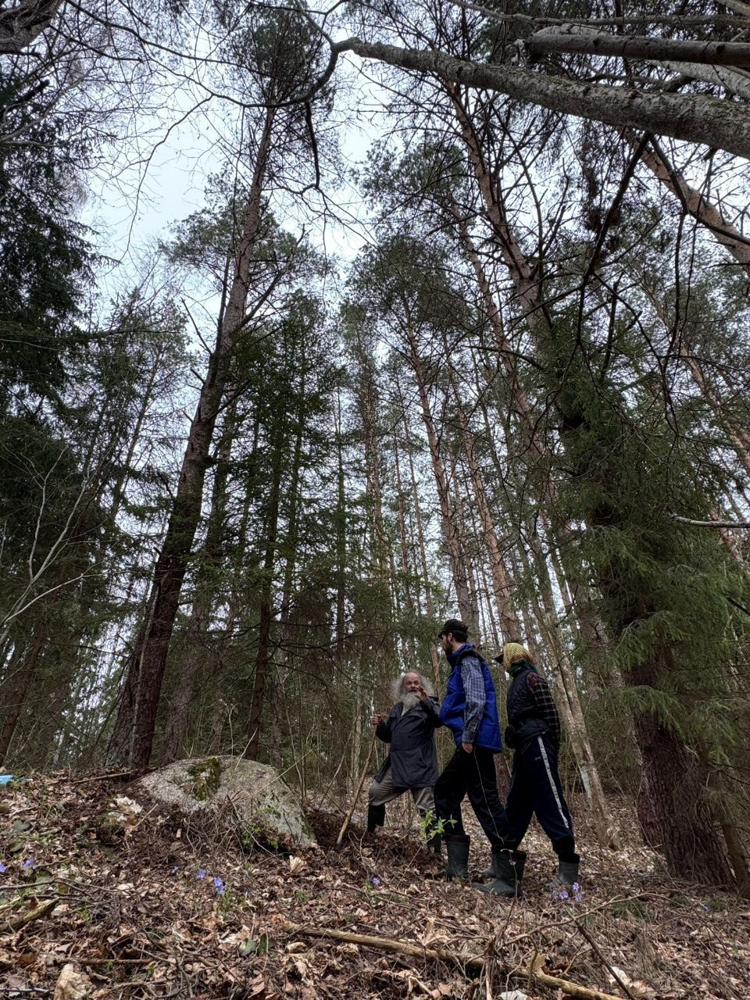
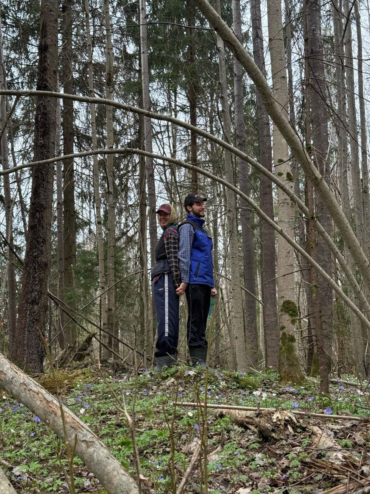
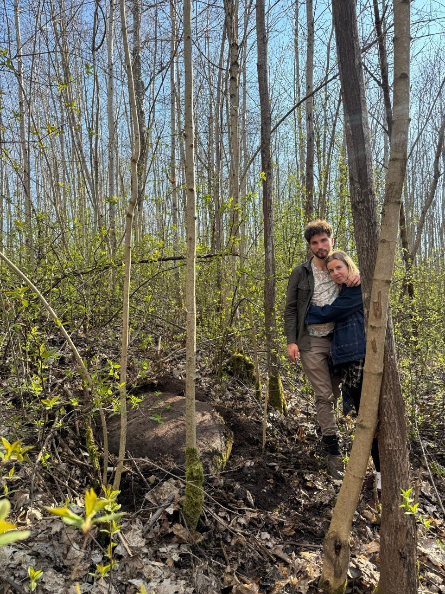
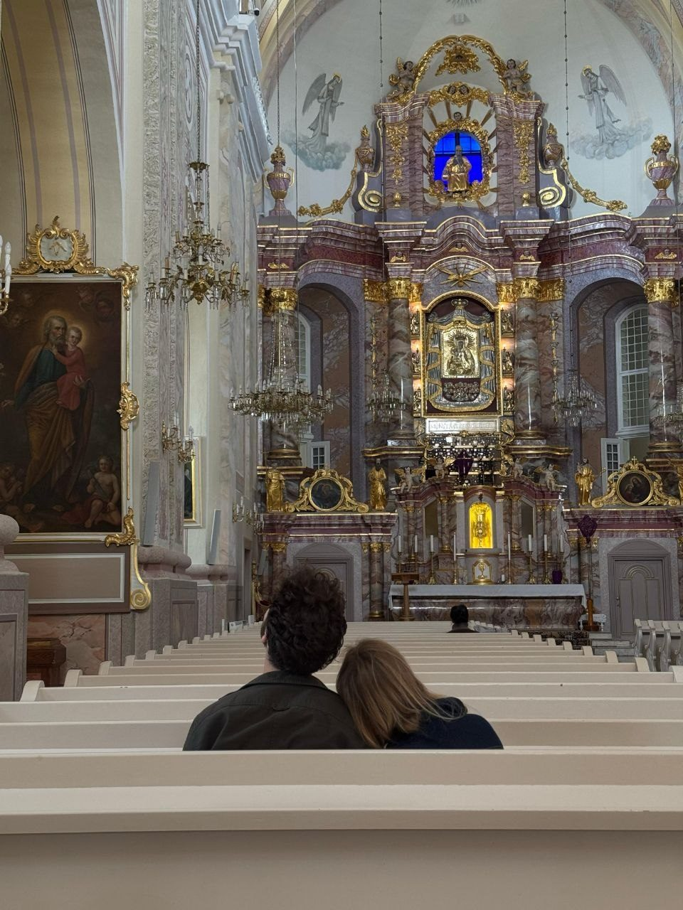
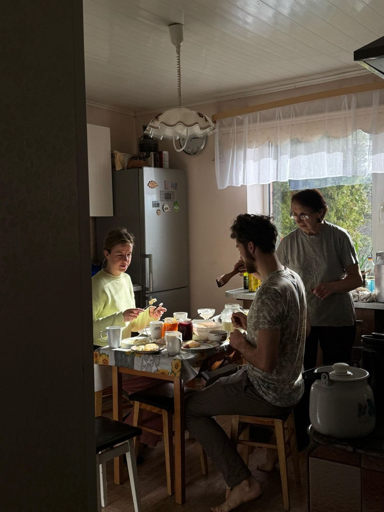

Skaistums, kuram var uzticēties
Venēras vadīts maigums: pieskāriens, krāsa, tekstūra, mājas sajūta un spēja radīt mieru ar ļoti praktiskām rokām.
Rūtai · 29.04.1993 · 09:05 · Rīga
Šī ir maza dzimšanas dienas pasaule tev: nevis pārspīlēta pasaka, bet spogulis. Lai tu uz mirkli ieraudzītu to, ko citi jūt tavā tuvumā — mieru, gaumi, siltumu un klusu spēku.
Oriģināla, maiga fona melodija šai lapai — Liepājas vējš, klavieres un mazliet jūras.

Pamata patiesība
Tev nav jādominē telpā, lai to mainītu. Tu pamani šķipsnu pirms fotogrāfijas, noskaņu aiz acīm, īsto brīdi jokam un brīdi, kad labāk vienkārši būt blakus.
Tava dāvana ir atmosfēra. Kā vizāžiste tu ne tikai uzklāj skaistumu — tu palīdzi cilvēkiem justies gataviem būt redzamiem. Kā mamma tu ne tikai rūpējies — tu kļūsti par vietu, kur bērnam pasaule sākas droši.
Viņas personīgais kods
Venēras vadīts maigums: pieskāriens, krāsa, tekstūra, mājas sajūta un spēja radīt mieru ar ļoti praktiskām rokām.
Tu nolasi telpu pirms tā ir paskaidrojusi sevi. Šī ir tava klusā antena — gaumē, mārketingā, cilvēkos un mīlestībā.
Tu neesi radīta kopēšanai. Tev piestāv noteikt toni pašai — darbā, ģimenē, kultūrā, skaistumā un savā nākamajā posmā.
Kurzemes spēks tevī nav ass. Tas ir mierīgs, spītīgs, jūrmalas izturīgs — romantisks, bet ne trausls.
Mirkļi, kas jau runā paši



Liepāja / Kurzeme
“Pilsētā, kurā piedzimst vējš.”Liepājas sajūta vienā teikumā
“Ābols no ābeles tālu nekrīt.”Maigums un spēks turpinās paaudzēs
“Kā vecie svilpo, tā jaunie danco.”Ernests jau mācās pasaules ritmu no jums
Liepājas kultūras DNS
Pilsēta ar profesionāla teātra saknēm dod īpašu jūtību pret tēlu, pauzi, klātbūtni un to, ko cilvēks nepasaka skaļi.
Liepājas koncertzāles sajūta šajā lapā ir kā metafora tev: silta, precīza, dzintaraina — redzama un dzirdama vienlaikus.
Kurzemes vējš nepadara cilvēku cietu. Tas iemāca stāvēt savā vietā, smaidīt cauri brāzmām un saglabāt gaumi arī haosā.
Liepāja gatavojas vēl lielākai kultūras gaismai, un arī tavs 33. gads var būt tāds: nevis beigas, bet skaists starts nākamajai skatuvei.
Precizēta astro karte · 09:05 · Rīga
Saule Vērsī dod viņai zemes sajūtu: skaistumu, pieskārienu, uzticamību un spēju radīt mieru reālā dzīvē — rokās, mājās, sejā, detaļās.
Vēža ascendents paskaidro sargājošo, silto klātbūtni: viņas tuvumā bērns un cilvēki jūt — šeit drīkst atslābt.
Lauvas Mēness piešķir sirdij radošu uguni: teātri, kultūru, dāsnumu pret savējiem un vēlmi būt patiesi novērtētai.
Maiju kalendāra simbolika · Tzolk’in
Kan stāsts ir par dzīvības kodu: mazu sēklu, kurā jau ir viss nākamais dārzs. Ķirzakas simbols dod spēju sajust vidi ar visu ķermeni — pamanīt smalkumu, gaismu, temperatūru, noskaņu.
Tas ļoti piestāv Rūtai: grimā, mājās, attiecībās un mammas lomā viņa strādā ar potenciālu. Viņa redz, kas cilvēkā vēl tikai dīgst, un prot to maigi izcelt.
Muluk nav dzīvnieks, bet ūdens zīme: jūtīgums, plūdums, emociju atmiņa un tīra spēja atsaukties pasaulei. Astoņnieks pieliek harmonijas tēmu — mācīties ritmu starp sevi un citiem.
Ernestam tas skan kā bērns, kuram vajag mierīgu ūdeni apkārt: balsi, pieskārienu, paredzamu ritmu. Viņš var ļoti smalki uztvert noskaņu un ar laiku mācīt visiem kļūt maigākiem.
Šo sadaļu uztver kā poētisku maiju kalendāra valodu — ne kā spriedumu, bet kā vēl vienu skaistu leņķi, no kura ieraudzīt viņus abus.
Human Design · Jovian Archive
Rūtas Human Design kartē ir Manifestor tips ar emocionālo autoritāti. Vienkāršā valodā: viņai vajag brīvību kustēties savā ritmā, laiku sajust patieso “jā”, un cilvēkus, kuri necenšas viņu kontrolēt — bet uzticas viņas iekšējam virzienam.
Dažreiz Rūta pēkšņi zina: “šādi būs labāk” — grimā, mājās, bildē, idejā, atmosfērā. Tas nav kaprīze. Tā ir iniciatora enerģija: viņa ierauga virzienu ātrāk nekā citi paspēj to nosaukt.
Bet viņai palīdz, ja apkārtējie zina, kas notiek. Nevis “vai drīkstu?”, bet “es jūtu, ka man vajag šādi”. Tad pazūd lieka pretestība, un viņai nav jācīnās par savu telpu.
Ja šodien ir “jā”, bet rīt ķermenis saka “pagaidi”, tas nenozīmē haosu. Viņas skaidrība nogatavojas emocionāli. Lielām izvēlēm viņai vajag nakti, pastaigu, klusumu — un tad atbilde nostājas.
Kad Rūta ir savā vietā, viņa kļūst mierīga, silta un ļoti klātesoša. Kad viņu steidzina, komandē vai neuzklausa, parādās dusmas — ne tāpēc, ka viņa ir asa, bet tāpēc, ka viņas robežas ir pārkāptas.
Viņai ir dabīgs talants, kas ne vienmēr grib sevi skaļi reklamēt. Viņa var šaubīties, vai ir “pietiekami laba”, kamēr citi jau redz: viņai ir roka, acs un sajūta. Un labākās iespējas bieži nāk caur īstajiem cilvēkiem — draugiem, klientiem, savējiem.
Viņai var vajadzēt vairāk nekā vienu vidi, lai sakārtotos: mājas, pastaiga, darbs ar cilvēkiem, klusums, kultūra. Ne vienmēr viss saslēdzas vienā sarunā. Dažreiz viņai vienkārši vajag pārvietoties cauri dienai, un ķermenis pats saliek gabaliņus kopā.
Viņas dzīvē atkārtojas “ceļu” tēma: kuru virzienu izvēlēties, kā savienot ģimeni, skaistumu, darbu, kultūru un mīlestību. Viņas dāvana nav viena taisna līnija — tā ir spēja atrast skaistu ceļu starp vairākām pasaulēm.
Rūta & Kristaps · connection chart
Jovian connection chart rāda ļoti skaidru kopējo valodu: mēs abi esam Manifestori ar emocionālo autoritāti. Tas nozīmē, ka mīlestība starp mums vislabāk elpo tad, kad viens otru nebakstām, nesteidzinām un nemēģinām pāraudzināt — bet pasakām patiesību, dodam telpu un atgriežamies ar skaidrāku sirdi.
13,5 mēneši nav “ilgi” kalendārā, bet dažas attiecības laiku skaita citādi: pēc tā, cik ātri cilvēks kļūst par mājām, pēc pirmā kopīgā haosa, pēc mazā Ernesta elpas, pēc brīžiem, kuros kļūst skaidrs — mēs jau esam ģimene.
Tas reizēm var būt intensīvi, jo nevienam no mums nepatīk sajūta, ka viņu vada aiz rokas. Bet skaistā versija ir ļoti jaudīga: mēs viens otram varam nebūt būris — mēs varam būt starts.
Ja emocijas paceļas, tas nenozīmē, ka mīlestība pazūd. Tas nozīmē, ka vajag laiku. Mums palīdz pauze, miegs, pastaiga, klusāka balss — un tad saruna kļūst patiesāka.
Ne tāpēc, lai prasītu atļauju. Bet tāpēc, lai otrs nejūtas pēkšņi izstumts no mūsu iekšējās pasaules. Mazs “man šodien vajag klusumu” var izglābt veselu vakaru.
Mūsu savienojums nav par to, ka viens pazūd otrā. Tas ir par diviem atsevišķiem cilvēkiem, kuri izvēlas satikties atkal un atkal — apzināti, nevis autopilotā.
Starp mums ir īsta vilkme — tās vietas, kur viens otrā ieslēdz kaut ko dzīvu. Tāpēc reizēm ir tik ātri, tik spēcīgi, tik “nu jā, tur kaut kas ir”.
Ir vietas, kur mums jāiemācās nebūt pareiziem — bet būt maigiem. Ne katru atšķirību vajag uzvarēt. Dažas vajag iemācīties turēt ar humoru.
Šis man patīk visvairāk: tas nav stāsts par vienu, kurš valda. Tas ir stāsts par diviem cilvēkiem, kuri mācās sadarboties bez varas spēlēm.
Ernests · 4 mēneši
Tu esi brīnišķīga ar viņu tādā veidā, ko nevar notēlot: pacietīgā pamanīšana, maigā nomierināšana, tava balss, kas viņam kļūst par drošības karti.
Ernests pie mums pieteicās ļoti ātri — it kā dzīve pati būtu izlēmusi nesteigties ar argumentiem un vienkārši atnest brīnumu. Un es par to esmu dziļi pateicīgs. Viņš ir tiešām brīnišķīgs: mūsu mazais 22.12.25 pēcpusdienas pierādījums tam, ka reizēm vissvarīgākās lietas atnāk nevis pēc plāna, bet tieši laikā.
Un tomēr — tu neesi “tikai mamma”. Tu esi sieviete ar gaumi, talantu, humoru, kultūras sajūtu, vēlmi, ambīciju un savu privāto okeānu. Mammas loma tevi nesamazināja. Tā izgaismoja arhitektūru, kas tevī jau bija.

Ernests · 22.12.2025 · Human Design ģimenes valodā
Ernesta karte rāda Manifesting Generator ar sakrālo autoritāti. Kamēr mēs abi kā Manifestori vairāk sākam kustību no iekšēja impulsa, viņš mācīsies caur ķermeņa reakciju: vai viņam ir dzīvs “jā”, vai arī ķermenis saka “nē”. Tas ir ļoti praktiski — viņu nav jālauž virzienā, viņam jādod iespēja atsaukties.
Ernests var būt ātrs, ziņkārīgs un ne vienmēr lineārs. Viņš var sākt ar vienu mantu, pārslēgties uz citu, pēkšņi atgriezties atpakaļ. Tas nav haoss — tas ir ķermenis, kas testē pasauli.
Praktiski: nevis “tagad dari šo”, bet “gribi šo vai šo?” Skaņa, seja, ķermenis, rokas — viņš rādīs atbildi pirms vārdiem. Viņa “mhm/uh-uh” būs zelts.
Kad viņš aug, palīdzēs jā/nē jautājumi: “gribi vēl?”, “ejam ārā?”, “šo bodiju?” Tas māca uzticēties ķermenim, nevis tikai paklausīt.
Ja viņš kļūst frustrēts, jautājums nav tikai “kā viņu apturēt?”, bet “vai viņam ir pārāk maz izvēles, kustības vai īstas atsaukšanās?”
Mūsu kā vecāku uzdevums nav viņu pāriniciēt. Mēs varam turēt drošu rāmi, bet atstāt viņam vietu atsaukties. Mazāk komandēt. Vairāk piedāvāt. Mazāk “tagad tā”. Vairāk “kurš no šiem tev ir jā?”
Viņš daudz mācīsies caur pieredzi: mēģinās, kļūdīsies, atkārtos, pēkšņi sapratīs. Tas nozīmē — droša vide eksperimentiem būs svarīgāka par perfektu instrukciju.
Viņa tēma ir mīlestības ķermenis: mīlestība pret dzīvi, cilvēkiem, kustību, tuvumu un pašu sevi. Mūsu darbs ir neizdzēst šo dabisko siltumu ar steigu vai kontroli.
Skaistums · mārketings · skatuve
Tava roka prot atrast cilvēka īsto gaismu: nedaudz drosmes acīs, vairāk miera ādā, un sajūtu — “es drīkstu būt redzama”.
Tu redzi, kur stāstam vajag krāsu, kur klusumu, kur precīzu teikumu. Tas ir talants savienot gaumi ar cilvēku psiholoģiju.
Ne obligāti skaļums — drīzāk spēja sajust lomu, ritmu, pauzi un brīdi, kad viens patiess skatiens pasaka vairāk nekā vesela aina.
Šis gads var būt par to, ka skaistums vairs nav tikai darbs citiem. Tas atnāk atpakaļ arī pie tevis — ķermenī, laikā, naudā un mierā.
Mazās patiesības, kuras redzu tevī
Dzimšanas dienas svētība
Lai tavas rokas atpūšas. Lai tavs talants tiek pienācīgi novērtēts. Lai mīlestība, darbs, kultūra, skaistums un mammas loma vairs necīnās par vietu — bet sakārtojas ap sievieti, par kuru tu kļūsti.